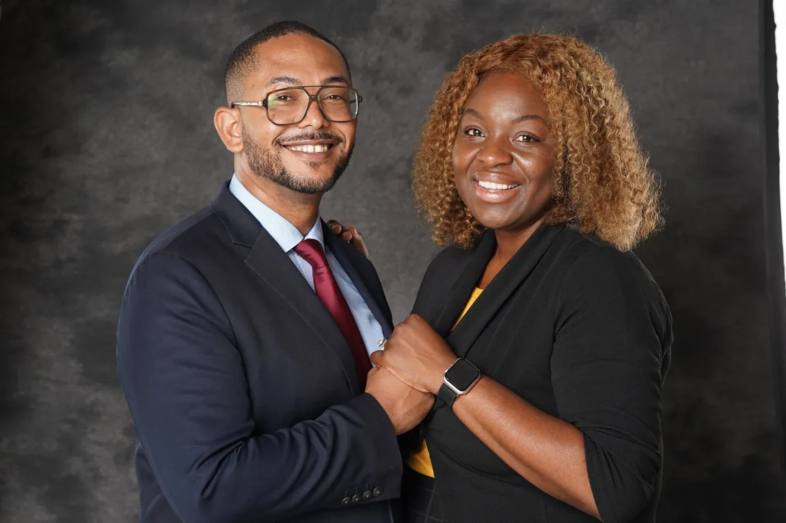
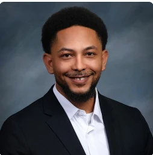
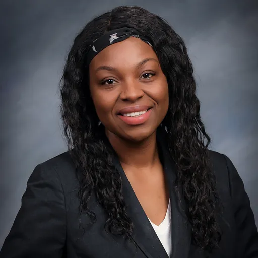

TU DOLOR NO DESAPARECE
Sienten que el dolor sigue presente y no desaparece.
Si sufriste lesiones en un accidente de carro, tienes facturas médicas y de deudas de trabajo, podrías tener opciones legales para tomar una compensación sin importar tu estatus migratorio.
Evaluación Gratuita de Caso ↗
Décadas de defensa contundente en los tribunales de Connecticut
Resultados reales y calificaciones excepcionales
Asesoría clara y confidencial en español e inglés
Indemnizaciones ganadas y acuerdos para víctimas de accidentes
Alrededor del 85% de nuestros clientes han expresado enfrentar los siguientes problemas luego de un accidente de carro dentro de Connecticut:
Sienten que el dolor sigue presente y no desaparece.
Llevas días sin poder trabajar y tus ingresos y estabilidad se ven afectados.
No estás seguro de aceptar la oferta de la aseguradora y necesitas una revisión legal.
Desconoces tus derechos y lo que legalmente podrías hacer.
Enfrentar una reclamación después de un accidente puede ser complicado. Descubre cómo la representación legal puede ayudarte a proteger tus intereses y tomar decisiones informadas frente a la aseguradora:
Puedes desconocer qué pruebas necesitas para respaldar tu reclamación.
Evaluamos las circunstancias del accidente y las opciones legales disponibles para tu caso.
Te transfieren a centros de llamadas y secretarías sin acceso a abogados.
Acceso directo y personal a los litigantes Juan Girón y Shernette Noyes.
El temor o la desinformación sobre tu estatus migratorio puede impedirte buscar orientación.
Te ayudamos a entender tus opciones legales, incluyendo las inquietudes relacionadas con tu situación migratoria.
Algunas pruebas pueden perderse si no se toman medidas oportunas para conservarlas.
Te orientamos sobre la evidencia importante y las medidas legales que podrían corresponder a tu caso.
Puedes desconocer los posibles costos y condiciones de contratar representación legal.
Sin honorarios de abogado por adelantado.
En Noyes & Associates, nuestro equipo trabaja para proteger los intereses de personas lesionadas en accidentes de tránsito, caídas y otros incidentes, brindando orientación legal y atención personalizada durante el proceso.

LITIGANTE DE JUICIOSJuan Girón lidera el desarrollo comercial y la experiencia de atención al cliente en Noyes & Associates. Su enfoque se centra en facilitar el acceso a los servicios de la firma, coordinar la atención de nuevos clientes y contribuir a que cada persona reciba orientación clara sobre los siguientes pasos de su proceso.

HOMENAJEADA SWEET MOTHER AWARD 2026Condecorada con el Sweet Mother Award 2026, la abogada Shernette Noyes cuenta con más de dos décadas de trayectoria jurídica compasiva y altamente estratégica. Defiende con pasión a familias vulnerables, víctimas de lesiones por accidente y la comunidad hispana, garantizando protección digna y alivio financiero. Ofrece representación 100% bilingüe en español e inglés sin intermediarios.
Desde accidentes de auto, camiones y motocicletas hasta caídas en establecimientos y lugares de trabajo. Te ayudamos a comprender tus derechos y explorar las opciones legales para obtener la compensación que podrías merecer.
¿Sufriste lesiones en un accidente de tránsito? Nuestro equipo legal evalúa tu caso y te orienta sobre las opciones para reclamar una compensación por gastos médicos, salarios perdidos y otros daños aplicables.
Los accidentes con camiones comerciales y motocicletas pueden ocasionar lesiones graves y reclamaciones complejas. Te ayudamos a comprender tus derechos y las opciones legales disponibles según las circunstancias del accidente.
¿Te lesionaste por una caída en un supermercado, estacionamiento o propiedad privada? Evaluamos las circunstancias del accidente para determinar qué opciones legales podrían estar disponibles.
Recuperación financiera obtenida mediante preparación de juicio implacable y defensa legal en los tribunales de Connecticut.
Reclamaciones relacionadas con colisiones de vehículos comerciales, lesiones graves y posibles pérdidas económicas.
Acuerdo por accidente de camiónCasos relacionados con accidentes en entornos laborales, lesiones físicas y reclamaciones por los daños correspondientes.
Compensación por lesiones laboralesReclamaciones derivadas de choques múltiples a alta velocidad que provocó lesiones de varias personas.
Acuerdo por accidente de tránsitoCasos relacionados con superficies peligrosas, caídas en establecimientos y posibles responsabilidades de propietarios.
Acuerdo por Responsabilidad de PropiedadReclamaciones relacionadas con accidentes que involucran servicios de transporte compartido y lesiones sufridas por pasajeros.
Compensación por accidente de transporteConoce las experiencias de personas que han confiado en Noyes & Associates para recibir orientación y acompañamiento durante sus procesos legales.
“Después de mi accidente de trabajo, estaba preocupado por mis gastos médicos y por no poder trabajar. El equipo de Noyes & Associates me explicó mis opciones y me acompañó durante el proceso. Finalmente, logramos llegar a un acuerdo que me ayudó a cubrir mis pérdidas y recuperar un poco de tranquilidad. Estoy muy agradecido por todo su apoyo.”
“Al principio no sabía si aceptar la oferta de la aseguradora. Decidí buscar ayuda en Noyes & Associates y fue una buena decisión. Me explicaron cómo funcionaba el proceso, revisaron mi situación y me ayudaron a conseguir un acuerdo favorable. Lo que más agradezco es que siempre me mantuvieron informado y sentí que mis preocupaciones fueron tomadas en serio.”
“Después de mi caída tuve que recibir tratamiento médico y pasar por una situación muy difícil. No sabía si podía reclamar una compensación. Con la ayuda de Noyes & Associates pude resolver mi caso y recibir una indemnización por las lesiones sufridas. Me trataron con respeto, respondieron mis preguntas y me ayudaron a cerrar una etapa complicada de mi vida.”
“Después de mi accidente de carro, tenía mucho dolor y no sabía cómo iba a pagar mis tratamientos. La aseguranza me había hecho una oferta, pero no estaba seguro de aceptarla. El equipo de Noyes & Associates revisó mi caso, me explicó todo con paciencia y se encargó de las negociaciones. Al final logramos llegar a un acuerdo que me ayudó con mis gastos médicos y el tiempo que estuve sin trabajar. Me sentí acompañado durante todo el proceso.”Imagen ilustrativa · Testimonio pendiente de verificación
“Tuve una caída en un negocio y terminé necesitando atención médica por mis lesiones. Al principio pensé que no podía hacer nada porque no sabía si el establecimiento era responsable. Decidí comunicarme con Noyes & Associates y desde la primera conversación me explicaron cuáles eran mis opciones. Me ayudaron a reunir la información necesaria y después de varios meses conseguimos resolver mi caso con una compensación. Agradezco que siempre estuvieron pendientes de mis preguntas.”Imagen ilustrativa · Testimonio pendiente de verificación
“Nunca había pasado por algo así. Después de que un camión chocara mi vehículo, tuve que faltar al trabajo y comenzar tratamientos por las lesiones. Estaba bastante preocupado porque las cuentas seguían llegando. En Noyes & Associates me orientaron sobre el proceso y se ocuparon de hablar con la aseguradora. Mi caso finalmente se resolvió mediante un acuerdo que me permitió recuperar parte de lo que había perdido. Gracias por tratarme con respeto y mantenerme informado.”Imagen ilustrativa · Testimonio pendiente de verificación
*Se utilizan iniciales para proteger la privacidad del cliente. Los resultados pasados no garantizan resultados similares bajo la ley de Connecticut.
Habla con nuestro equipo sobre tus opciones legales después de un accidente en Connecticut.